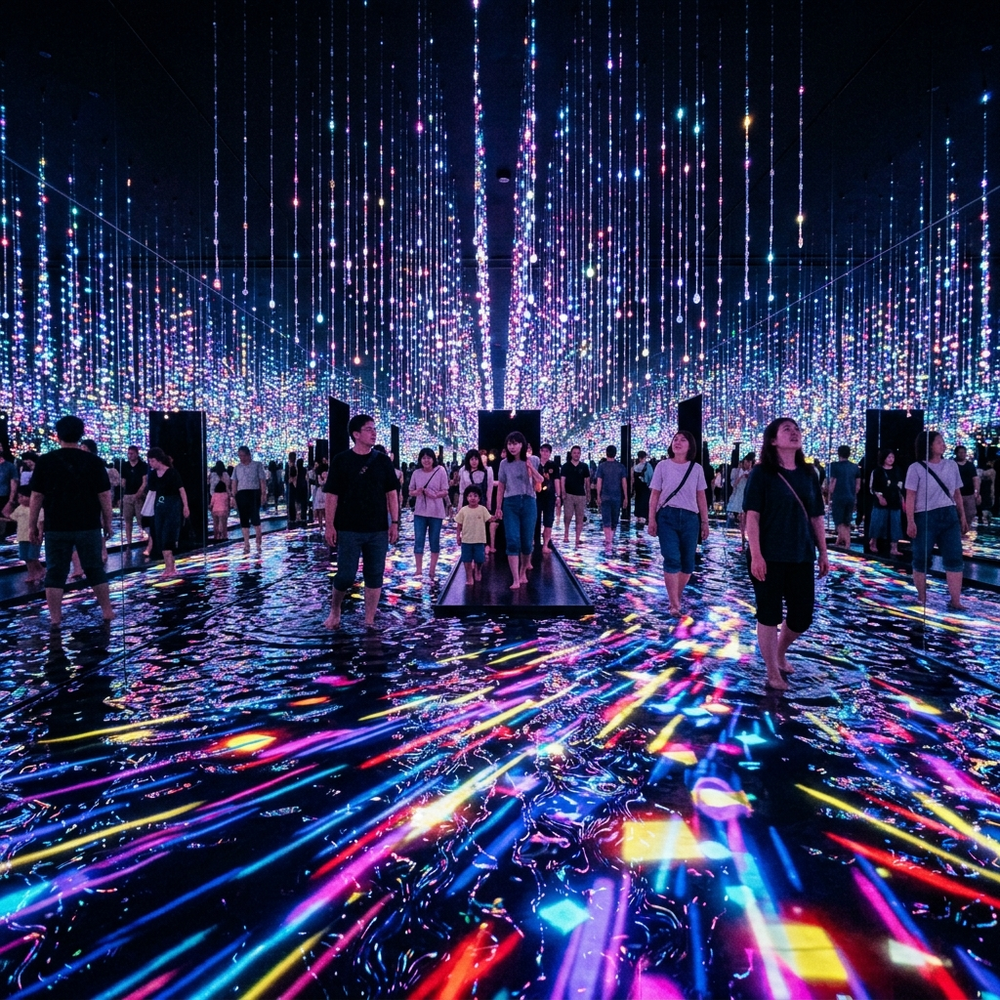
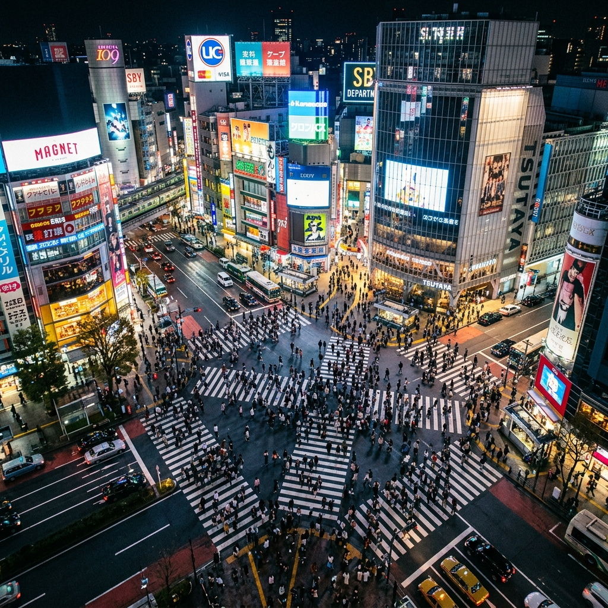
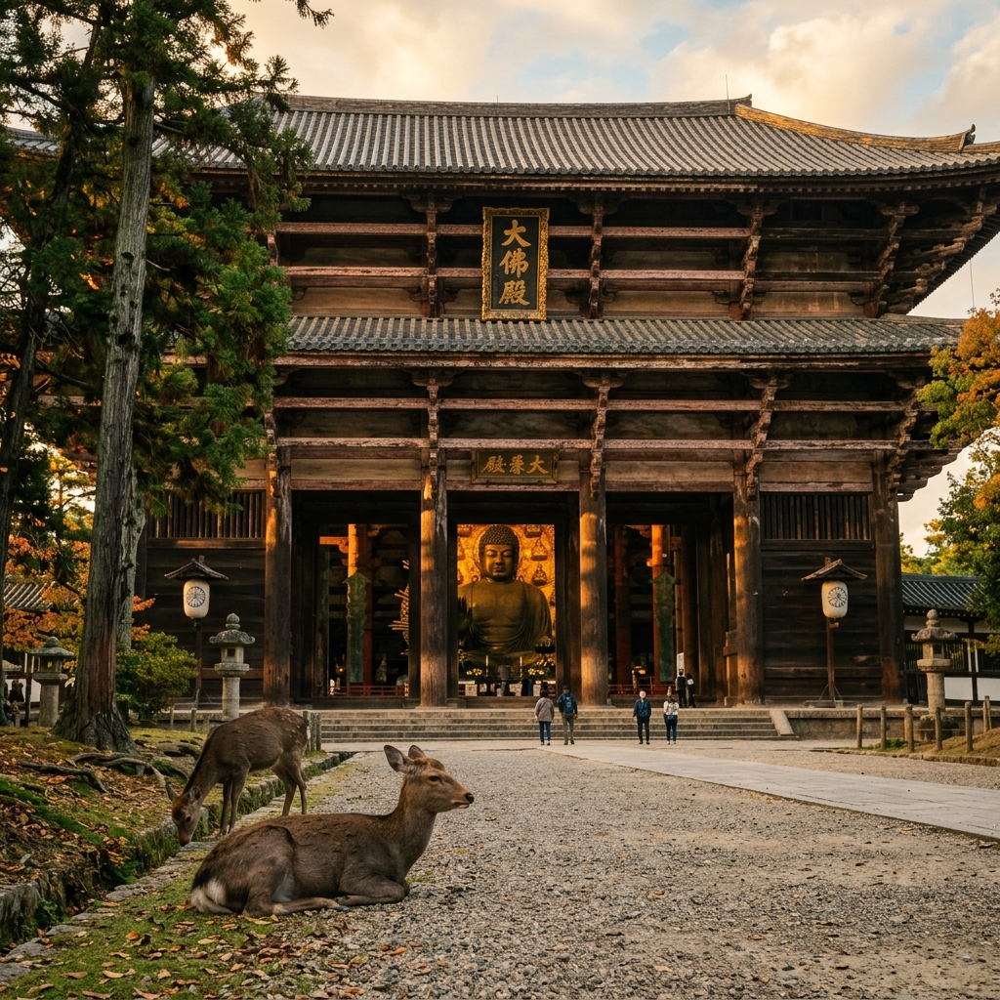
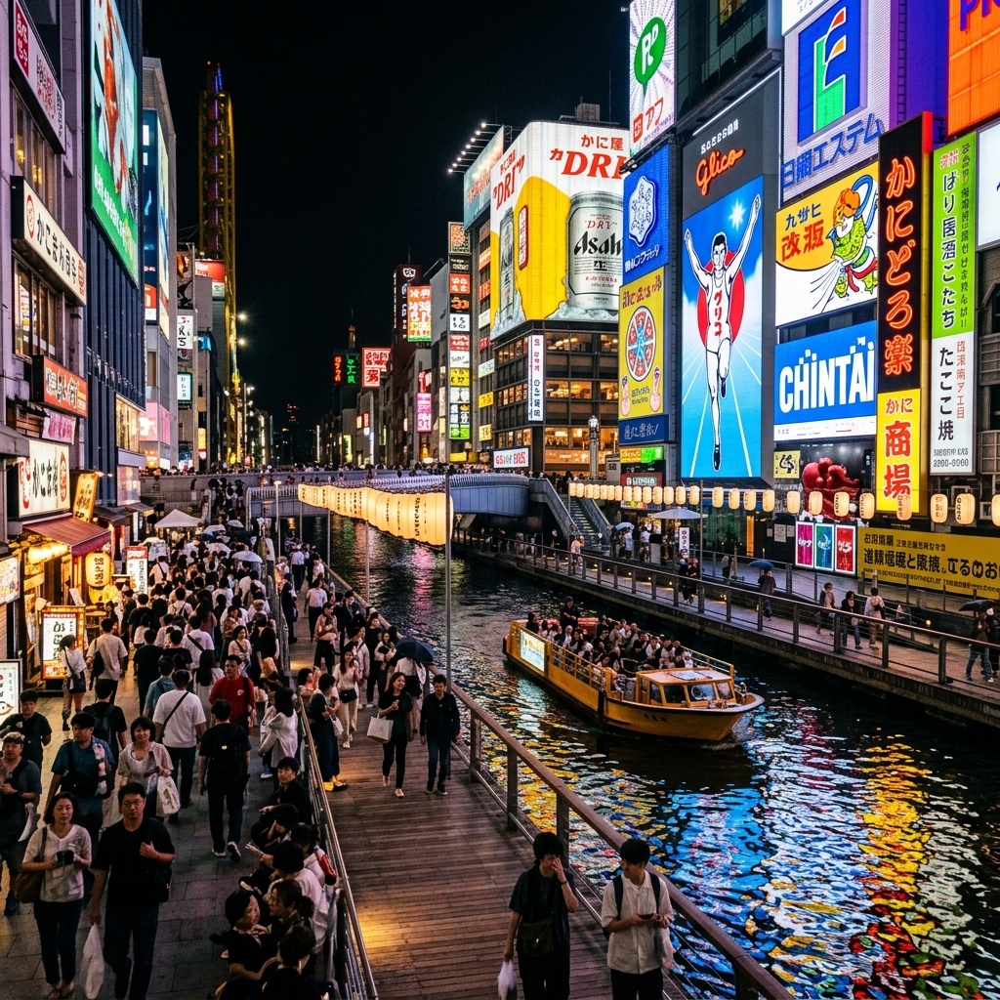
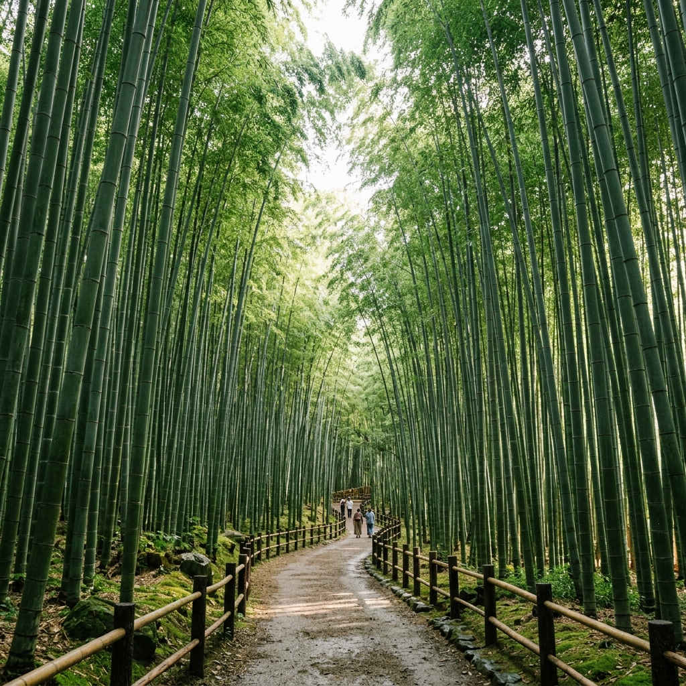
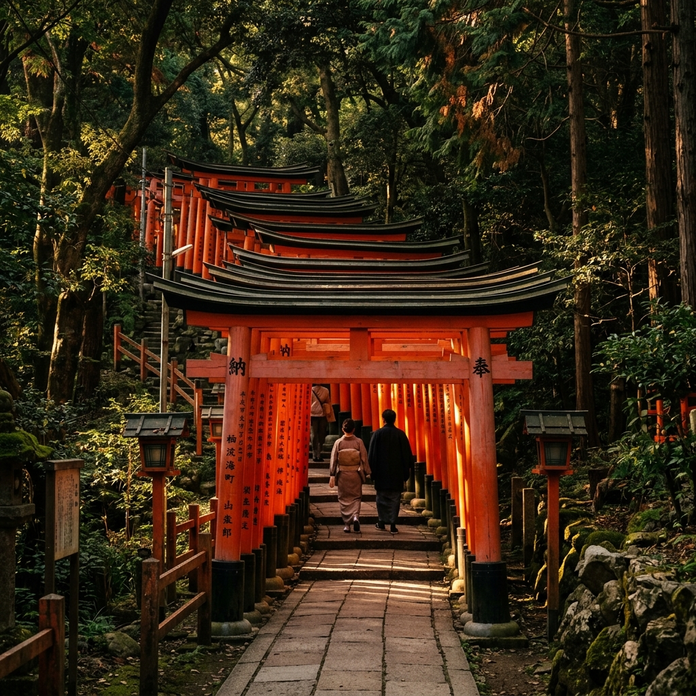
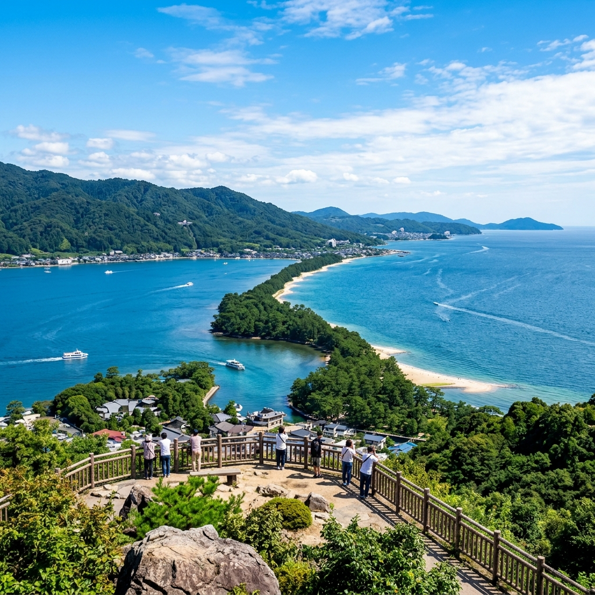
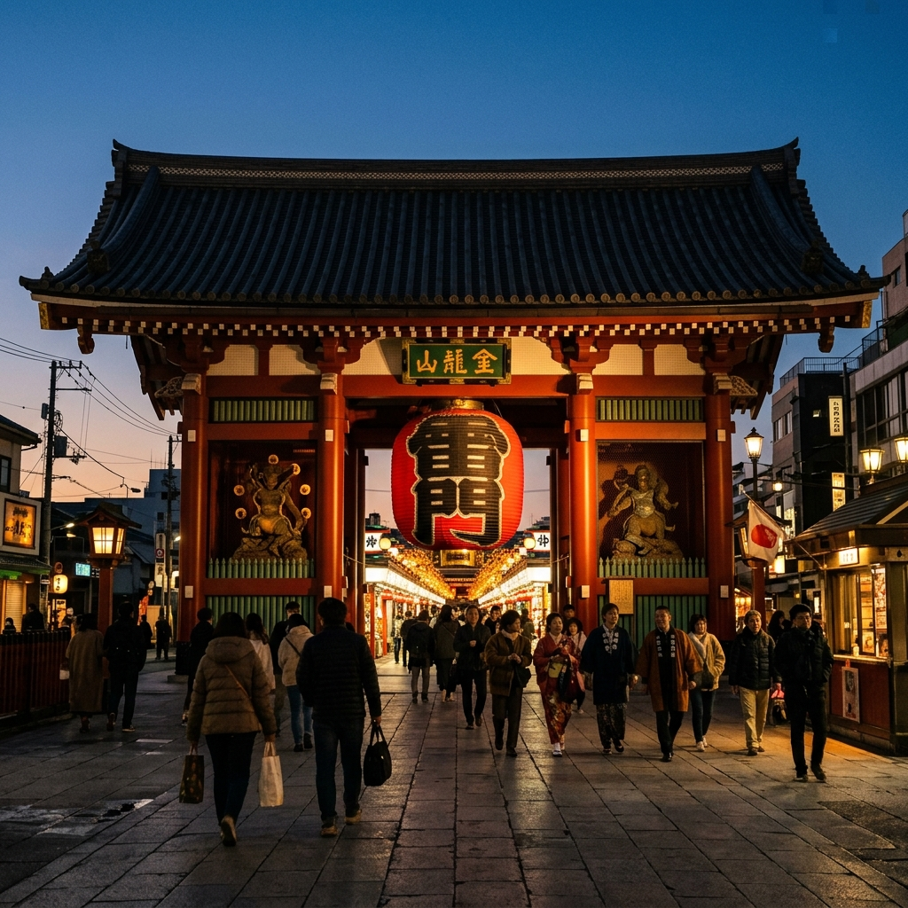
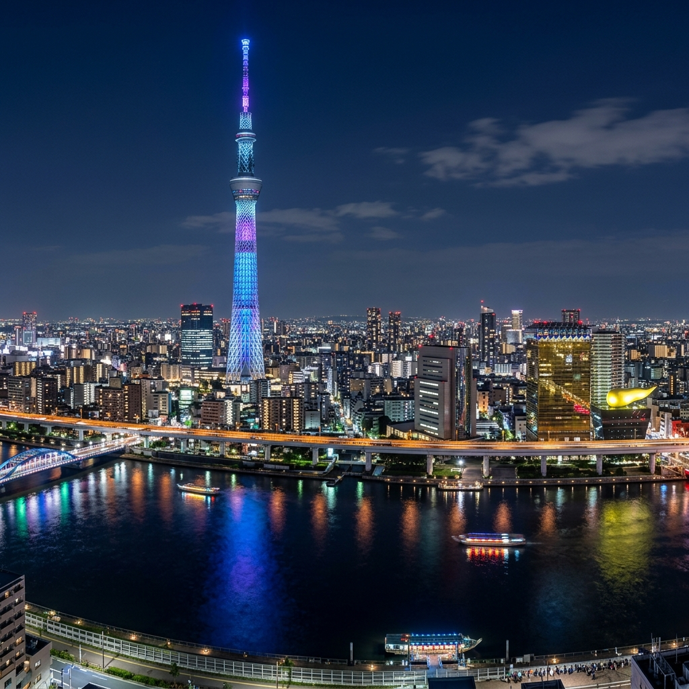
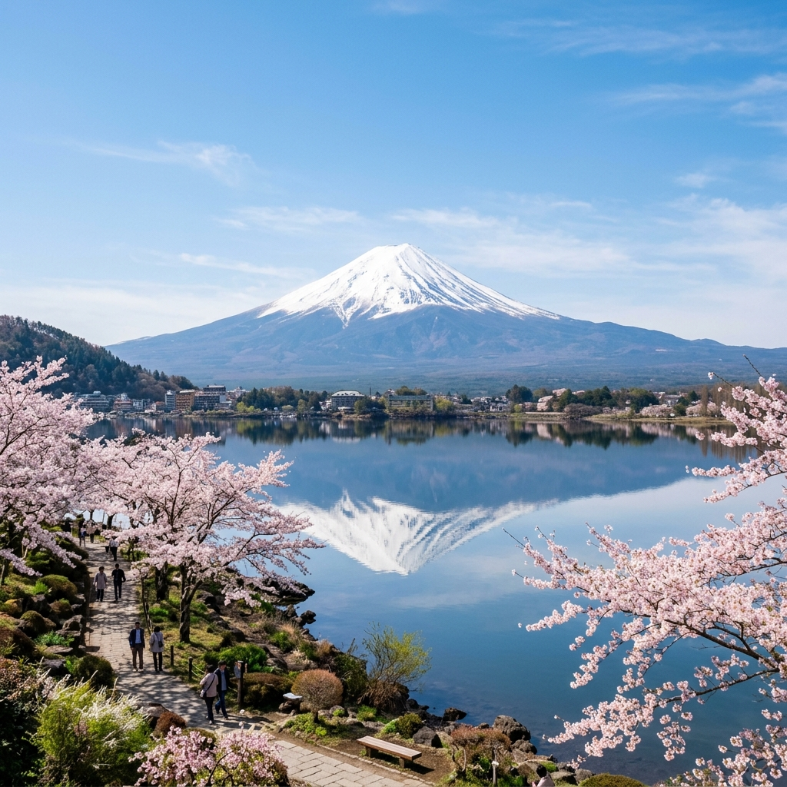

Sunday, 30 August 2026

Monday, 31 August 2026

Tuesday, 1 September 2026

Wednesday, 2 September 2026

Thursday, 3 September 2026

Friday, 4 September 2026

Saturday, 5 September 2026

Saturday, 5 September 2026 (evening shinkansen)

Sunday, 6 September 2026

Monday, 7 September 2026
Have a hidden gem, restaurant, experience, or shopping spot to suggest? Drop it below — everyone in the group can add their ideas here.